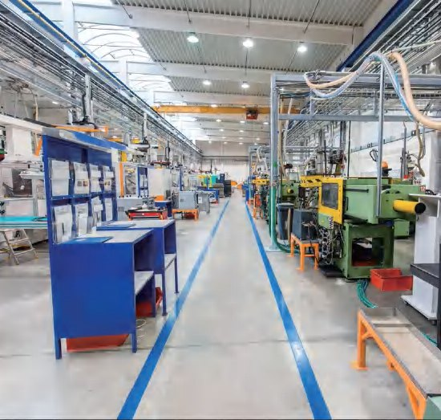

Ba câu hỏi. Ra loại cần dùng.
Kết quả là gợi ý ban đầu. Cỡ rào, độ dài, loại băng chốt sau khi khảo sát tại chỗ.
Kiểm 10 điểm trong 15 phút, đi đúng lúc xe đang chạy.
Đánh dấu những điều anh chị thấy trong kho hôm nay. Chỉ cần điện thoại để chụp lại.
Chưa đánh dấu điểm nào
Đi một vòng kho rồi đánh dấu những điều anh chị thấy.
Cách chọn rào chắn và băng dán sàn khi tự đi kiểm kho
Cách chọn rào chắn và băng dán sàn bắt đầu từ việc đi đúng giờ, nhìn đúng chỗ và ghi đủ thông tin. Chúng tôi giải thích các câu hỏi của công cụ chọn nhanh và cách dùng checklist để anh chị có ảnh gửi đi được ngay.
Chuẩn bị trước khi tự kiểm an toàn nhà xưởng
Một vòng tự kiểm chỉ có ích khi đi đúng lúc kho đang chạy. Lúc vắng, lối đi nào cũng trông an toàn.
- Đi trong giờ ca đang chạy, nếu được thì vào giờ cao điểm nhập, xuất hàng
- Mang điện thoại để chụp ảnh và một thước dây hoặc thước đo laser
- In sơ đồ mặt bằng nếu có, đánh số các khu để ghi chú cho khớp
- Đi cùng một người của tổ xe nâng, họ biết chỗ nào hay va mà ảnh không thấy
- Kho chạy hai ca thì đi thêm một vòng lúc tối
Chọn rào theo loại xe
Loại xe quyết định cỡ rào nhiều hơn chiều dài đoạn rào. Khi ghi lại, hãy ghi loại xe nặng nhất từng chạy qua đoạn đó, không phải loại xe chạy nhiều nhất. Một chiếc xe nâng dầu đi qua mỗi tuần một lần vẫn đủ làm hỏng đoạn rào chọn cho xe nâng tay.
- Ghi tải và tốc độ thường chạy của xe, nếu biết
- Ghi điểm va: càng xe, pallet đang chở hay thân xe
- Ghi khoảng trống giữa đường xe và chỗ định đặt rào
- Có xe tải lùi vào dock thì ghi riêng, vì chỗ đó cần chặn bánh xe hoặc cột chắn ở mép dock
Kẻ vạch hay làm rào
Hãy hỏi: nếu tài xế mất tập trung một giây, xe sẽ chạm vào gì. Nếu xe chỉ lấn qua vạch và không có ai đứng đó, kẻ vạch là đủ. Nếu xe có thể chạm người, chạm chân kệ đang chịu tải hoặc tủ điện, cần một vật cản cứng. Khi còn phân vân, chọn rào cho đoạn có người và chọn vạch cho đoạn chỉ có hàng.
Dùng checklist an toàn kho cho có kết quả
Checklist 10 điểm dùng để biết chỗ nào nên chụp ảnh gửi đi, không dùng để chấm kho tốt hay xấu. Mỗi điểm đã đánh dấu nên có hai ảnh và một dòng ghi chú.
- Ảnh rộng: đứng xa để thấy đường xe, lối người, kệ hoặc cầu thang trong cùng khung
- Ảnh gần: vết móp, vết sơn xe dính lại, mũi bậc mòn
- Ghi chú: chiều dài ước lượng, loại xe, giờ hay đông
Công cụ chọn nhanh không làm được gì
Công cụ chọn nhanh và checklist không thay khảo sát tại chỗ. Chúng không đo được độ dày sàn, khoảng trống thật giữa kệ và đường xe, hay góc ôm cua quen tay của từng tài xế. Khi đã có ảnh, gửi cho Thiên Khôi để nhận gợi ý dòng rào chắn polymer hoặc loại băng dán sàn cụ thể cho từng chỗ.
| Dấu hiệu khi đi kiểm | Nhóm nên xem | Mức ưu tiên |
|---|---|---|
| Vết móp mới ở chân kệ đầu dãy | Ốp chân kệ, rào xe nâng | Cao nếu kệ đang chịu tải |
| Vạch mờ ở khúc cua | Băng kẻ vạch hoặc sơn lại | Trung bình |
| Người đi tắt qua đường xe | Rào lối đi bộ, cổng tự đóng | Cao |
| Mũi bậc mòn bóng | Băng chống trơn | Cao nếu cầu thang dùng hằng ngày |
| Tắt đèn không thấy mép bậc | Băng dạ quang, kiểm lại đèn sự cố | Cao |
| Vết va ở tường sau ô đỗ | Chặn bánh xe, thanh chắn sàn | Trung bình |
Tự kiểm kho cần chuẩn bị gì?
Điện thoại để chụp ảnh, thước dây hoặc thước laser, sơ đồ mặt bằng nếu có, và bản in checklist 10 điểm. Nên đi đúng giờ ca đang chạy, cùng một người của tổ xe nâng vì họ biết chỗ nào hay va. Kho chạy hai ca thì đi thêm một vòng lúc tối. Bản in có ở trang tài liệu.
Chọn rào theo loại xe nâng như thế nào?
Lấy loại xe nặng nhất từng chạy qua đoạn đó làm chuẩn, không lấy loại xe chạy nhiều nhất. Xe nâng tay cần cỡ nhỏ, xe nâng dầu chở pallet cao cần cỡ lớn và đế chắc. Ghi thêm tốc độ và điểm va là càng xe, pallet hay thân xe. Cỡ cụ thể chốt khi đo tại chỗ. Xem các dòng rào chắn polymer.
Chọn rào chắn và băng dán sàn: khi nào chỉ cần băng, khi nào cần rào?
Băng đủ khi việc cần làm chỉ là nhắc: lối phụ, khoanh vùng pallet, chia khu theo 5S. Cần rào khi có người đi sát đường xe, chân kệ đang chịu tải hoặc tủ điện nằm trên đường xe ôm cua. Nhiều đoạn dùng cả hai: rào chặn, vạch chỉ lối. Xem băng dán sàn và ba mức tách người khỏi xe nâng.
Checklist có thay được khảo sát chuyên môn không?
Không. Checklist chỉ là bước đầu trong cách chọn rào chắn và băng dán sàn. Nó cho anh chị biết chỗ nào nên chụp ảnh gửi đi, nhưng không đo được độ dày sàn, khoảng trống thật giữa kệ và đường xe, hay tải của xe. Những thông tin đó cần người đến đo trong ca. Dùng checklist trước, rồi đặt khảo sát với ảnh đã chụp. Xem thêm 7 khu trong kho.
Cần gửi ảnh gì để Thiên Khôi gợi ý?
Mỗi chỗ một ảnh rộng thấy cả lối đi, kệ hoặc cầu thang trong cùng khung, và một ảnh gần thấy vết va, vết mòn hoặc chỗ trơn. Ghi kèm chiều dài ước lượng, loại xe chạy qua và giờ đông. Gửi qua trang đặt khảo sát hoặc Zalo. Chưa rõ chụp chỗ nào thì xem 7 khu trong kho.

Ba bước để kho của anh chị có đề xuất theo từng khu
Bắt đầu từ vài tấm ảnh chụp bằng điện thoại. Chúng tôi xem ảnh, gọi lại, rồi hẹn xuống kho đúng giờ ca đang chạy.
- 1Gửi ảnh vị trí
Chụp chỗ hay va hoặc hay trơn, ghi chiều dài ước lượng và loại xe chạy qua.
- 2Nhận gợi ý ban đầu
Thiên Khôi xem ảnh, gọi lại và gợi ý nhóm rào hoặc loại băng cho từng chỗ.
- 3Khảo sát tại chỗ
Hẹn đúng giờ ca đang chạy để đo, xem nền sàn, rồi gửi đề xuất cho từng khu.
Đã nhận yêu cầu
Bản mẫu: form này chưa gửi đi đâu. Trên web thật, Thiên Khôi gọi lại theo số anh chị để lại.